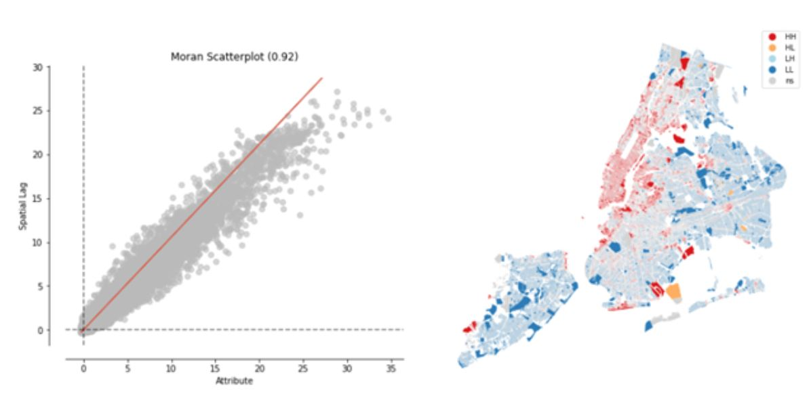
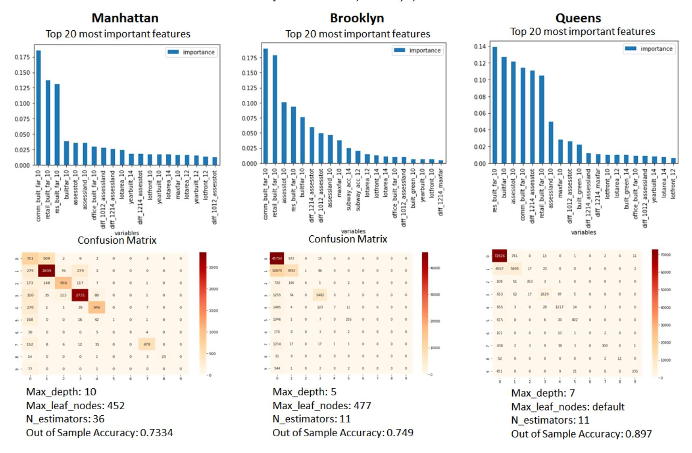

About
Promoting optimal urban land use is critical to help neighborhoods thrive and make cities sustainable. While market forces encourage the most economic use of land, zoning serves as a check to assure the community is best served. Rezoning may be undertaken to create economic development, accommodate population growth, or respond to neighborhood needs and preferences. This study aims to determine what has caused results to deviate from intended goals in past rezonings to better anticipate and mitigate deviations in future rezonings.
The project’s theoretical value is to understand how various land uses (e.g., residential, commercial) complement and compete with one another. The social value reflects the rezoned community’s needs. Data was collected based on interviews with residential and commercial real estate developers who explained what drives the economics of developing an urban parcel, and includes demographic, land use, and neighborhood quality data. The data was loaded into a supervised machine learning model in which the dependent variable was land use. In addition, a second model was developed to predict future built floor area ratio (FAR) by land use. We developed a visualization tool which could be used to understand current trends and anticipate future needs of neighborhoods.
Problem Statement and Scope
Problem Definition
The intentions behind rezoning do not always align with the resultant rezoned environment.
What is causing the disconnect between the stated goals and the actual outcomes of New York City rezonings? Why did the Downtown Brooklyn rezoning, intended to create a commercial district, become a mainly residential neighborhood, and why were the resultant residential problems such as school overcrowding not mitigated along the way?
This problem occurs in rezonings because goals are decided in a one-time process that is not re-evaluated over time. Moreover, planners are not held accountable to meet the goals and do not have an incentive to monitor the results over the course of the build. As a result, unfavorable deviations are not properly mitigated. Zoning provides incentives to developers through tradeoffs such as increased height restrictions and tax breaks in return for community benefits such as affordable housing or schools. However, outside influences such as economic, technological, and cultural changes can upend the goals of a rezoning during and after the build years. We identified the leading causes of the problem (“5 Whys”), and studied other cities’ experiences with rezoning.
Hypothesis: Quantifiable Problem
We merged data from different sources and years. Some patterns emerged, which informed our hypothesis and which metrics to examine. As shown in Figure 1, the rezoning changes to floor area ratios (FARs) and allowance for lot mergers in Downtown Brooklyn created incentives to erect taller buildings, resulting in builders’ maximizing available development rights.
{kind=link}
We expected that the extensive building was due in part to the more generous FARs allowed by the rezoning. However, that much of the mixed use FARs intended to develop commercial space were ultimately used for residential may also be due to external factors. Our hypotheses included the following: 1) NYC’s high corporate tax rates created incentives for businesses to leave the city. 2) Housing prices at the time of the rezoning were lower in Brooklyn than in Manhattan, increasing residential demand in the rezoned area. 3) Amenities that attract commercial usage (such as open space and multiple transit options) likely also attracted residential customers to this area.
Problem Question
How do we learn from a prior rezoning after it was built and did not meet its intended goals to improve the results of future rezoning?
We researched the details behind the NYC rezoning process, as well as the process to modify a zoning plan after approval (included in Appendix 3, ULURP Process). We interviewed a Downtown Brooklyn Community Board member to understand the Board’s vetting process for rezonings. Finally, we interviewed three real estate developers to learn what factors they consider when choosing whether to build on a particular lot. These factors became the variables in our model.
Data and Input Variables for Machine Learning Models
| Data Source | Variables | Categories |
|---|---|---|
| PLUTO | Type of property | Infrastructure and Landuse |
| Landuse | ||
| Housing Unit | ||
| US Census | Population | Demographic |
| Income Level | ||
| Educational Level | ||
| MTA | Transport Access | Traffic |
| NYC 311 Data | 311 Complaints | Environmental |
| NYC Open Data - Street Tree | Street Tree Data | |
| Google Earth Engine | Built Green Data | |
| NYPD | Crime Data | Safety |
Methodology
Regression
The predicted factor is the built FAR for the main land uses (residential and commercial) based on the analyzed variables, and their spatial and temporal patterns. We tried different regression models (random forest, linear regression, lasso and ridge regression and other ensemble methods) for each variable. We fit the linear regression to understand the relevance of each variable, and as a descriptive model to demonstrate the relationships across variables. Random forest and the other ensemble methods were the models with expected higher performance based on their ability to capture nonlinear relationships that were identified in the variables.
Classification
The predicted factor is the lot land use. We ran different classification models (multinomial logistic regression, random forest, ensemble methods) to see whether the underlying trends would give us enough predictable power to identify a possible land use or to assign a certain probability to a specific event. Random forest is great with high dimensional data and faster to train than decision trees since we are working with subsets of data and many features.
Results
The final dataset has over 800,000 rows and 66 variables. To save training time and improve accuracy of the model, we divided it into boroughs (Figure 2) and modeled using Manhattan (5% of tax lots), Brooklyn (33%), and Queens (38%), and considered eleven DCP land use categories.
{kind=link}
Built FAR Model
We built a dataset composed of three components (Figure 3). To understand whether the commercial and residential built FAR had spatial patterns, we used the global and local Moran’s I spatial autocorrelation metric. For the global metric a high positive autocorrelation (0.92) showed that the spatial autocorrelation was an important pattern to consider for both variables. The figure below shows the results of the local test. Each lot is classified in one of four possible categories (High-High(HH), High-Low(HL), Low-High(LH), Low-Low(LL)) if the spatial trend is statistically significant; if not, the lot is classified as non-significant (ns). The local positive autocorrelation was significant mainly in Manhattan and western Brooklyn (the area closest to Manhattan), showing the need for independent models across boroughs. We ran the same test for the five boroughs independently finding a high spatial autocorrelation for all of them, with a coefficient around 0.85. This test shows the importance of including the spatial trend in the model, accomplished by including variables that consider the change across time of the neighbors of each lot. Those neighbors were found in the autocorrelation calculation, achieved using the inverse distance method.
{kind=link}
The best results were obtained with a tuned random forest using the PCA components that were able to explain 80% of the total variance of the model. However, we used a non-PCA model to capture the feature importance across the variables for each borough (Appendix 6). For the residential model, the built FAR in the baseline year is very important because most of the lots do not change from the baseline-built area. Land price and total price variables are important spatially for Brooklyn, Manhattan and Queens. Subway access seems to be very important for the Bronx and Brooklyn. For Manhattan it does not appear as a key factor, maybe because within Manhattan there isn’t a high variance across subway access relative to other boroughs.
Results show that spatial patterns are very important to understand the underlying trends of neighborhoods leading to an increase in the residential built FAR. For all five boroughs, the variables accounting for the change in neighbors’ values become systemically important for each individual model, demonstrating the impact of including temporal and spatial patterns in the model specification. We found that socio-demographic variables such as income and percentage of low education households are relevant for most of the boroughs, showing the social responsibility of city rezoning. Vulnerable communities (poor or low educated) under certain conditions (e.g. good subway access, strong prices) might be subject to an upzone of their neighborhood, starting a process of gentrification.
Our training sample accuracy is high, having an average accuracy of 0.96 across the five boroughs. Our test accuracy is slightly lower, but still shows great performance with an average score of 0.92. We have great results; however, this is primarily due to the stationary characteristics of built FAR across years. For most of the lots, the built area did not change between 2010 and 2017, so having a model that predicts the same value would give us a score around 0.81. For that reason we also calculated the accuracy including only the lots that were upzoned in the observed period. Results show that our estimated models have an average score of 0.71, with a maximum of 0.85 in Manhattan and the lowest prediction power in Queens.
Land Use Model - Random Forest Classification
With the same variables from the previous model except land use and zoning dummy attributes, we conducted random forest classification to predict 2017 land use and find important variables. We found the best parameter value by tuning two parameters for each of the three boroughs, calculated the out-of-sample accuracy and plotted the confusion matrix (Figure above). From the confusion matrix it can be seen that the largest tax lot category, One & Two Family Buildings, has the lowest predictive performance. In the three boroughs, the variables that ranked high in common were the 2010 built FAR, built year, area and front of tax lot, assessment of land, and the change from 2012 to 2014. The top 20 most important features of the Brooklyn model include subway accessibility and built-green area in addition to Map PLUTO data. The results show that future land use may vary and rezoning may occur depending on the size of the tax lot or the width of the front and the extent to which the valuation amount and each built FAR changes.
Results by Variable
Detailed results for demographics, subway access, built green area, noise, street quality, and crime and their relative correlation in predicting lot-specific land use are included in Figure 4.
{kind=link}